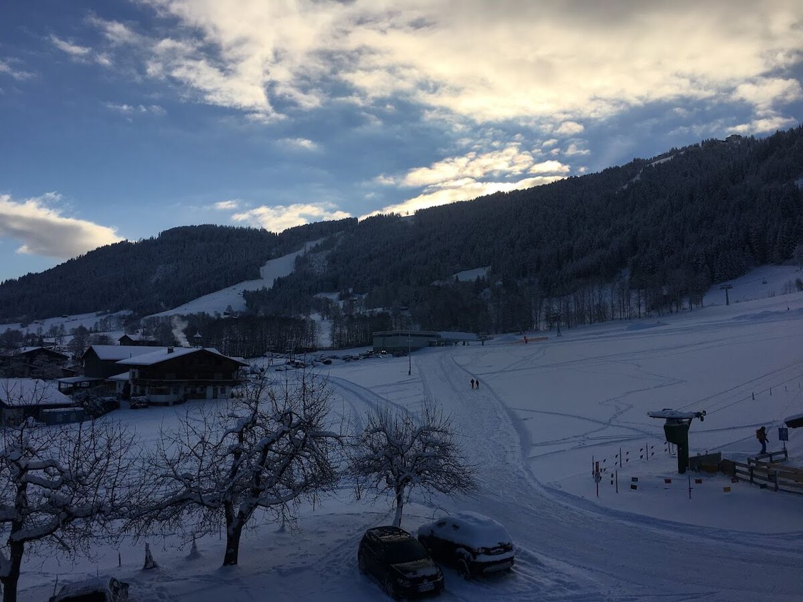
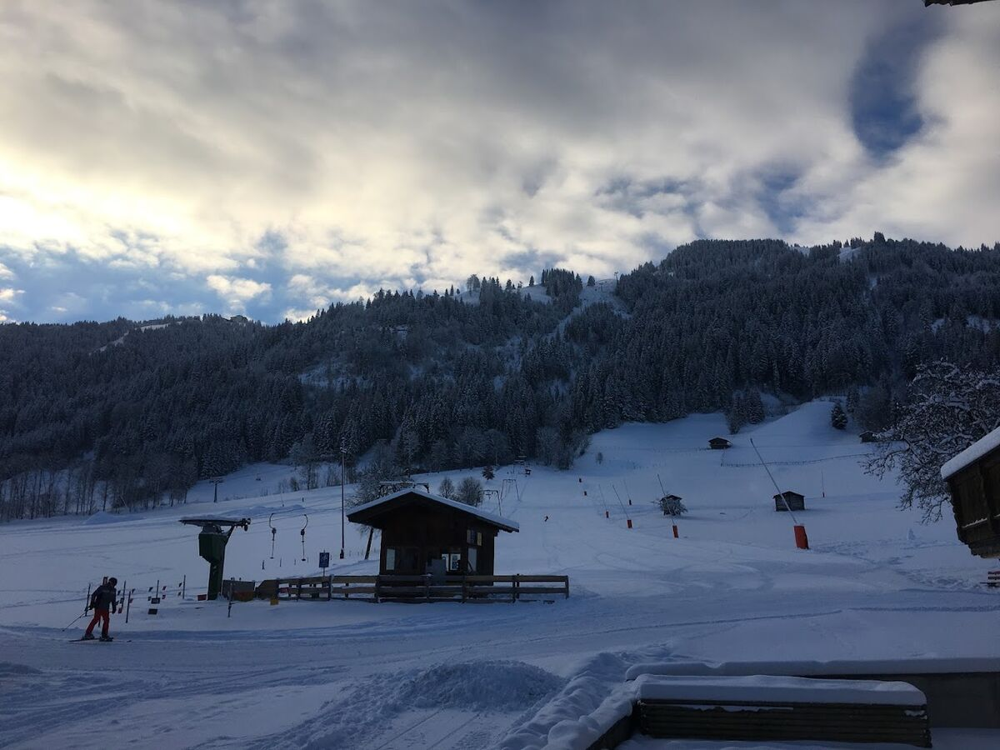
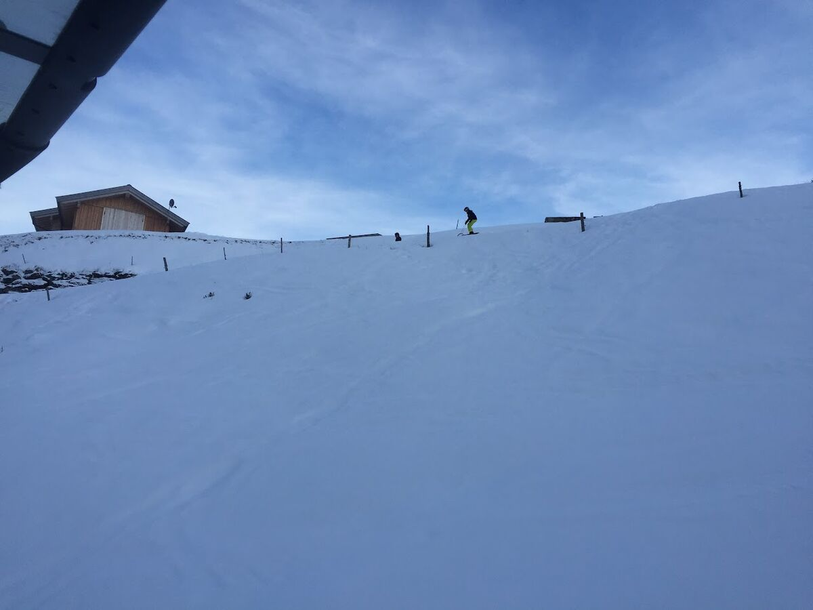
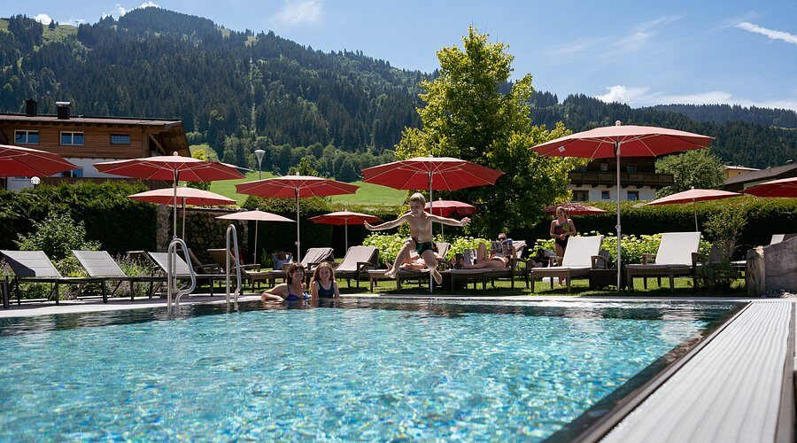
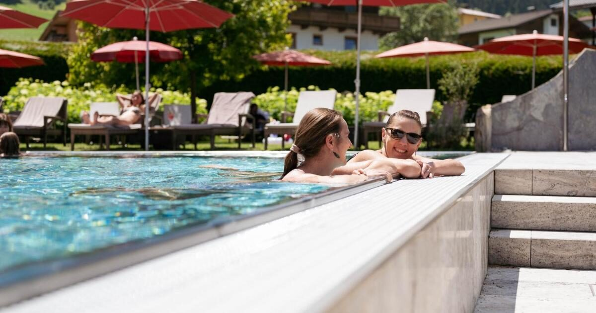
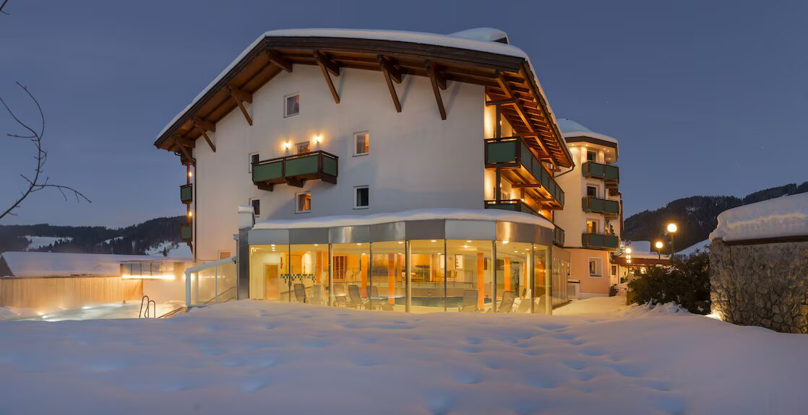
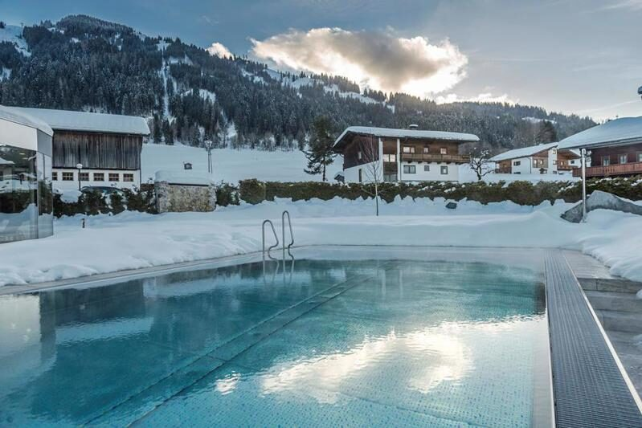
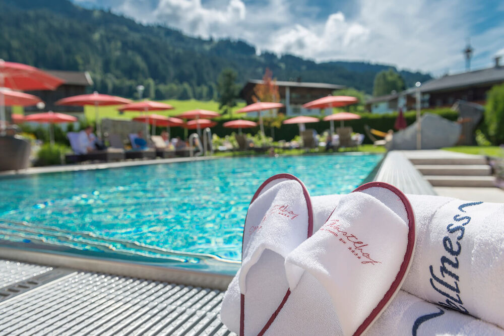

Skifahren direkt vom Dorf
Die Markbachjochbahn bringt Sie von Niederau hinauf zum Markbachjoch. Breite, sonnige Pisten, ideal für Anfänger und Familien, mit Abfahrten bis ins Dorf.
Tirol · Österreich
Das sonnige Bergdorf am Eingang der Wildschönau. Ein Ort zum Skifahren, zum Wandern und um jedes Jahr wieder nach Hause zu kommen.
❄ Wintersaison: Pisten direkt vom Dorf, Rodeln und klare Winternachmittage.
☀ Sommersaison: Almen, Bergwanderungen und lange Abende auf der Terrasse.
Das Dorf
Niederau ist das erste Dorf, das man erreicht, wenn man von Wörgl im Inntal die Bergstraße hinauf in die Wildschönau fährt. Es liegt auf rund 828 Metern in einem weiten, grünen Hochtal, umgeben von Almwiesen, Wäldern und den Gipfeln der Kitzbüheler Alpen.
Gemeinsam mit Oberau, Auffach und Thierbach bildet Niederau die Gemeinde Wildschönau im Bezirk Kufstein. Das Dorf ist seit jeher bei niederländischen und britischen Gästen beliebt: kompakt, gemütlich, mit Skischulen, Pensionen und Hotels in Gehweite zum Lift.



Sommer & Winter
Im Winter ein überschaubares Skidorf mit direktem Zugang zu einem großen Skigebiet, im Sommer ein ruhiger Ausgangspunkt für Wanderer, Radfahrer und Familien.
Die Markbachjochbahn bringt Sie von Niederau hinauf zum Markbachjoch. Breite, sonnige Pisten, ideal für Anfänger und Familien, mit Abfahrten bis ins Dorf.
Mit dem Skipass des Ski Juwel Alpbachtal Wildschönau fahren Sie auch am Schatzberg in Auffach und über die Verbindung weiter ins Alpbachtal. Der Skibus pendelt zwischen den Dörfern.
Niederau hat seit jeher starke Skischulen mit Unterricht auf Niederländisch, Englisch und Deutsch sowie Übungswiesen direkt beim Dorf. Ein schöner Ort, um Skifahren zu lernen.
Loipen durchs Tal und geräumte Winterwanderwege vorbei an Bauernhöfen und Kapellen. Auch Schneeschuhwandern und Rodeln sind beliebt: Das Tal hat drei Rodelbahnen, die am Lahnerköpfl liegt in Niederau selbst.
Gemütlich, ohne übertrieben zu sein: Nach einem Skitag kehrt man in einer Hütte oder im Dorf ein – auf Glühwein, Kaiserschmarrn oder ein Tiroler Gröstl.
Niederau liegt offen im Tal und bekommt viel Sonne – herrlich auf einer Terrasse im März, wenn die Tage länger werden und der Schnee noch gut ist.
Hunderte Kilometer markierte Wanderwege: von gemütlichen Talwanderungen bis zu Touren über die Bergkämme rund ums Tal. Mit der Gondel ist man in wenigen Minuten oben.
Eine der schönsten Klammwanderungen Tirols: von der Wildschönau entlang der wilden Wildschönauer Ache hinunter nach Kundl im Inntal.
Forstwege und Bergsträßchen hinauf zu den Almen; mit dem E-Bike sind auch die höher gelegenen Hütten gut erreichbar.
Im Sommer sind viele Almen bewirtschaftet: Käse, Buttermilch, Speck und Kaspressknödel mit Blick auf die Hohen Tauern und das Kaisergebirge.
Spielplätze, Bäche zum Stauen, Bauernhoftiere und kurze Wanderungen mit einer Hütte als Belohnung. Die Wildschönau ist auf Familien eingestellt. Am Ortsrand von Niederau liegt ein Freibad mit drei Becken und einer großen Rutsche.
Blasmusik am Dorfplatz, kirchliche Feiertage und der Almabtrieb im Herbst, wenn das geschmückte Vieh von den Bergen zurückkehrt.
Mit der Wildschönau Premium Card fahren Sie im Sommer gratis mit den Bergbahnen. Fragen Sie Ihre Unterkunft, ob sie die Karte anbietet.
Die Wildschönau
Das Hochtal Wildschönau liegt in den Kitzbüheler Alpen und gilt als sonniges und schneesicheres Urlaubsziel. Nicht zuletzt dank seiner freundlichen Ausstrahlung erhielt das Tal den ersten Preis des ADAC in der Kategorie „Klein & Fein“.
Die Wildschönau besteht aus den vier Kirchdörfern Niederau, Oberau, Auffach und Thierbach sowie dem Weiler Mühltal. Das Tal eignet sich besonders für entspanntes Skifahren inmitten einer herrlichen Bergwelt. Die stets gut erreichbare Urlaubsregion liegt nicht weit von Kufstein und bietet neben dem klassischen Wintersport auch ein vielseitiges Sommerangebot.
Das erste und touristischste Dorf, mit der Gondel zum Markbachjoch und dem größten Angebot an Unterkünften.
Das Verwaltungszentrum des Tals, mit der großen Pfarrkirche und einem weiten, sonnigen Plateau.
Hinten im Tal, am Fuß des Schatzbergs und der Verbindung ins Alpbachtal.
Das kleinste und höchstgelegene Dorf, ruhig und mit weitem Blick über das Inntal.
Die Wildschönau ist bekannt für den Krautinger, einen kräftigen Schnaps aus weißen Rüben (Stoppelrüben). Der Überlieferung nach erhielten die Bauern des Tals das Brennrecht schon zur Zeit Kaiserin Maria Theresias. Nur noch eine begrenzte Zahl von Höfen darf ihn brennen – verkostet wird direkt am Hof.
Unterkunftstipp
Familienbetrieb und Vier-Sterne-Wellnesshotel in Niederau, im Herzen der Kitzbüheler Alpen – mit Skigebiet und Wanderwegen direkt vor der Tür.


Partner: Niederau.nl arbeitet mit dem Hotel Wastlhof zusammen. Preise, Ausstattung und Verfügbarkeit finden Sie auf der Website des Hotels.





Anreise
Hinweis: Auf österreichischen Autobahnen brauchen Sie eine Vignette (digital oder als Klebevignette). Von München aus sind es rund 1,5 Stunden Fahrt.
Der Bahnhof Wörgl Hbf liegt an der Hauptstrecke München – Innsbruck und ist gut angebunden, auch mit Nachtzügen. Ab Wörgl fährt ein Regionalbus in die Wildschönau.
Nächstgelegene Flughäfen: Innsbruck (± 1 Std.), Salzburg (± 1,5 Std.) und München (± 2 Std.).
Praktisches
Zum Skifahren ist Mitte Jänner bis Mitte März am schneesichersten; der März ist besonders sonnig. Im Sommer sind Juni und September ruhiger als die Schulferien – bei bestem Wanderwetter.
Ja, für österreichische Autobahnen (wie die A12 nach Wörgl). Erhältlich online bei der ASFINAG oder an Tankstellen vor der Grenze. Eine online gekaufte digitale Vignette sollten Sie einige Tage im Voraus erwerben.
Auf jeden Fall. Die breiten Pisten am Markbachjoch, die Übungswiesen beim Dorf und die Skischulen machen Niederau seit jeher beliebt bei Familien und Anfängern.
Umgangssprache ist Deutsch (mit kräftigem Tiroler Dialekt), aber in Hotels, Skischulen und Restaurants kommt man auch mit Englisch und oft mit Niederländisch gut zurecht.
Euronotruf 112. Bergrettung in Österreich: 140. Prüfen Sie im Winter vor jeder Tour den Lawinenlagebericht.
Beim offiziellen Tourismusverband Wildschönau und beim Ski Juwel. Siehe Links nebenan.
Niederau.nl ist eine unabhängige Seite und nicht mit dem Tourismusverband oder den Bergbahnen verbunden. Aktuelle Zeiten und Preise bitte immer bei den offiziellen Quellen prüfen.